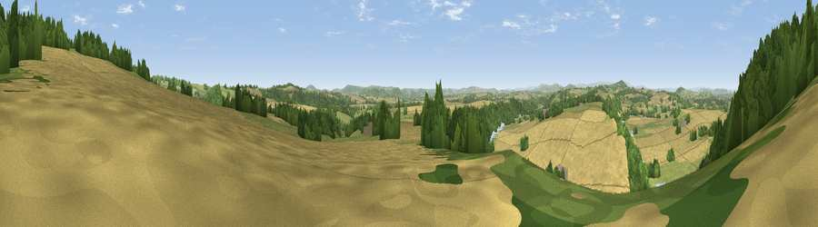

Viewpoint near Ballingham
#7117 in England · top 18% of its area beats it · near BallinghamThe view, rendered

A 360° render of this exact spot computed from the terrain model, tree cover and land cover — summer colours, afternoon light, calibrated against photographs of famous viewpoints. Real trees, hedges and buildings will differ in detail.
The panorama
Grey silhouette: terrain skyline in each direction (720 bearings, Earth curvature and refraction included). Dashed green: skyline with trees (+15 m) and buildings (+8 m) as obstacles. Blue strip: how far the ground is visible on each bearing.
Where the view opens
Wedge length = distance to the farthest visible ground on that bearing (vegetation-aware). Rings at 10, 25 and 50 km.
What fills the view
42% cropland · 39% woodland · 13% grassland · 5% water
Angular shares of the visible panorama (visual magnitude), not map area. Landscape diversity 0.51 (0–1 Shannon).
Key numbers
More beautiful places nearby
The staircase of upgrades: each row has a higher view potential than everything closer. Driving times are estimates from straight-line distance, calibrated against real road routing — check an actual route before setting out.
| Place | Direction | Drive | Score |
|---|---|---|---|
| Viewpoint near Fownhope | NNW · 0 km | ~2 min | 76.0 |
| Viewpoint near Woolhope | ENE · 4 km | ~9 min | 80.7 |
| Viewpoint near Putley | NE · 7 km | ~14 min | 80.9 |
| Viewpoint near Tarrington | NNE · 7 km | ~14 min | 81.4 |
| Seagar Hill | NNE · 7 km | ~14 min | 82.1 |
| Garway Hill | WSW · 17 km | ~30 min | 84.6 |
| Millennium Hill | ENE · 18 km | ~32 min | 86.9 |
| Worcestershire Beacon | NE · 22 km | ~36 min | 87.1 |
51.98876, -2.59738 · source: screening · position refined by local search. Computed location — check access rights before visiting.